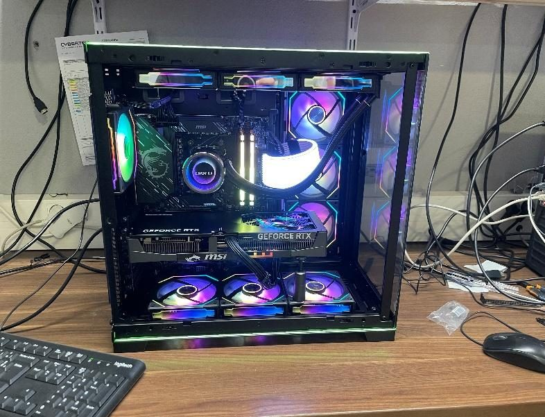
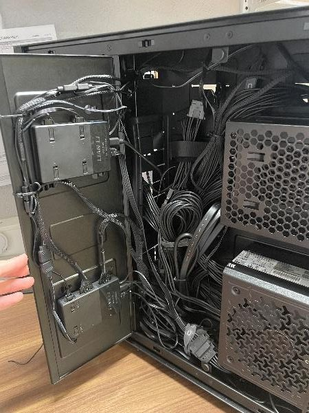

Montage de PC de A à Z
Carte mère, processeur et ventilation, RAM, stockage, alimentation, carte graphique, puis câblage et cable management. Le branchement du front panel a été ma difficulté du début : j'ai pris le réflexe de suivre la documentation du fabricant.
Ensuite viennent l'installation de Windows, des pilotes (chipset, GPU, RST) et des logiciels courants via Ninite.

